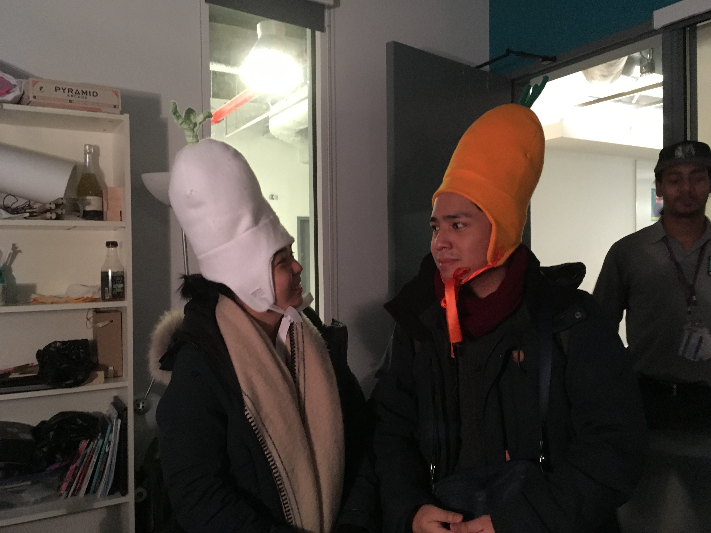
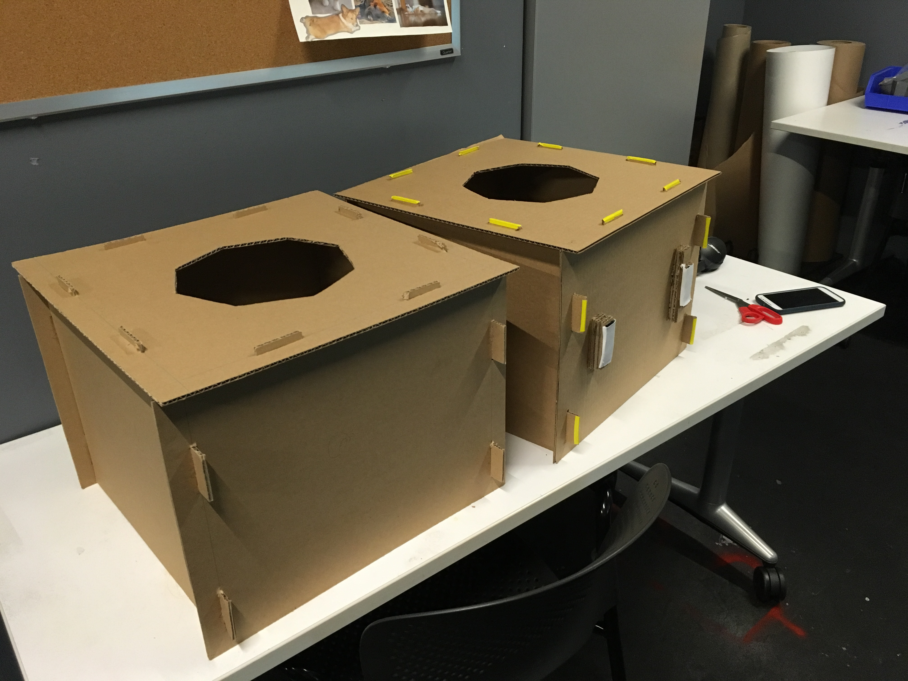
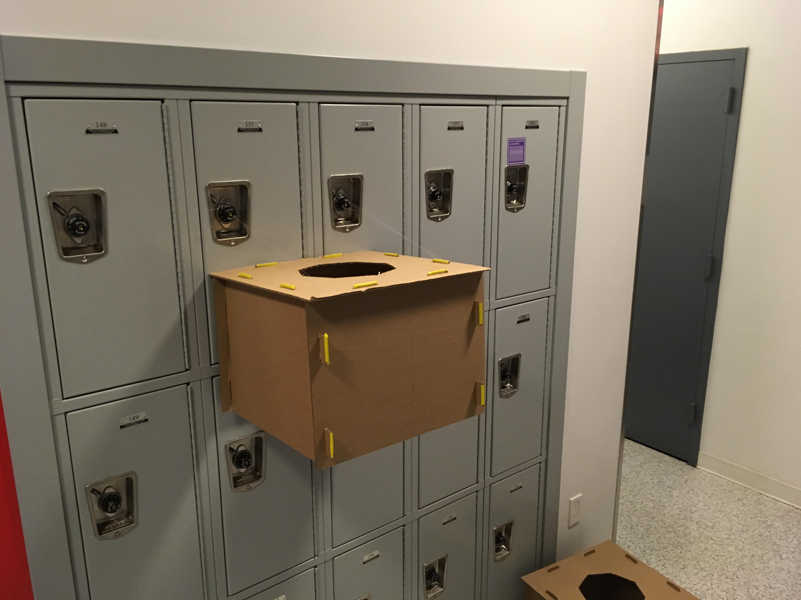
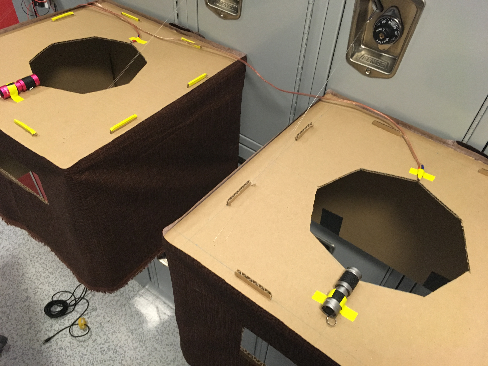
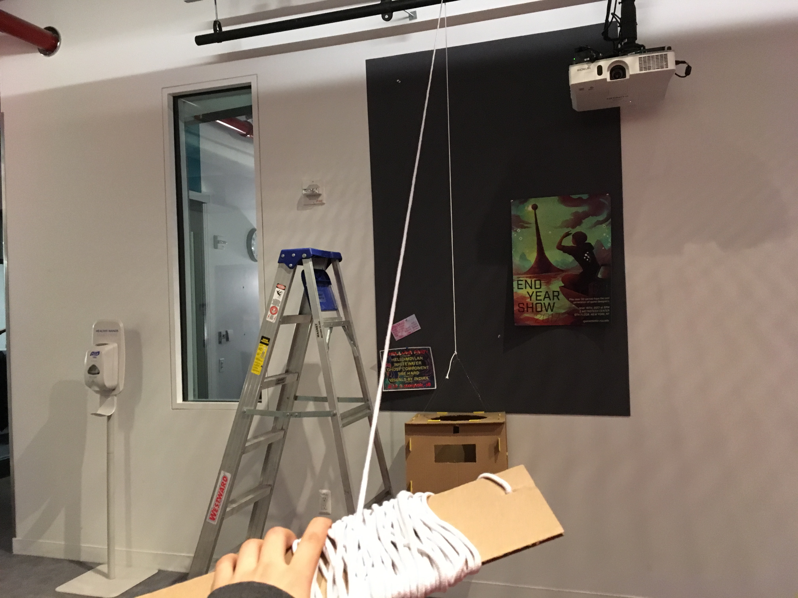
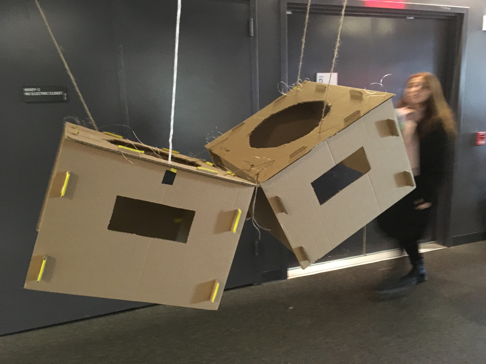

I used the fleece hat pattern from craftygemini.com and made the outside layer taller and stuffed it, just by extending the pattern. This was my first pass on the hats, I was just looking for something easy to make so we could get the game going.

I added vegetable stems for theming and ribbons on the bottom to keep the hats stable (and for cuteness).

The first boxes I made were also just something for convenience so we could test the game. They were designed to be easy to disassemble, which proved to be really useful.
We actually tried a lot of different ways of suspending them, including velcroing them to fabric bulliten board on the wall (it worked but didn't support enough weight). We weren't allowed to attach anything to the walls, so our options were severely limited.

We ended up using hooks on lockers on the wall to attach strings to which supported the boxes. This limited the height they could be at, but at least it worked.

I set both of them up with fabric covers (and new eye-holes), and attached flashlights and photoresistors to the top, which were wired to an arduino, also hanging off a locker hook. The whole thing was pretty haphazard.
This worked for an initial playtest and recording, but it was really hard on taller people. The height of the boxes affected how the game felt a lot, in a way we weren't going for, so it was a problem I had to solve.

First I tried hanging, which actually worked really well. The way the box was able to go up and down was really satisfying, kind of ... like a guillotine... But the box itself was really unstable and would swing around wildly.

I tried with both boxes and secured in multiple directions, but it was a huge headache and wasn't easy to set up or change box heights, so I gave up on that. I had also though of using magnets to keep them steady on the wall, but we didn't have wall space set up for that.
After speaking to several people, I decided to do boxes that remained at a single height and instead make different types of hats. I wanted to redo the hats anyway, and it would simplify a lot of things, as well as be eaiser to facilitate and easier for people to understand.